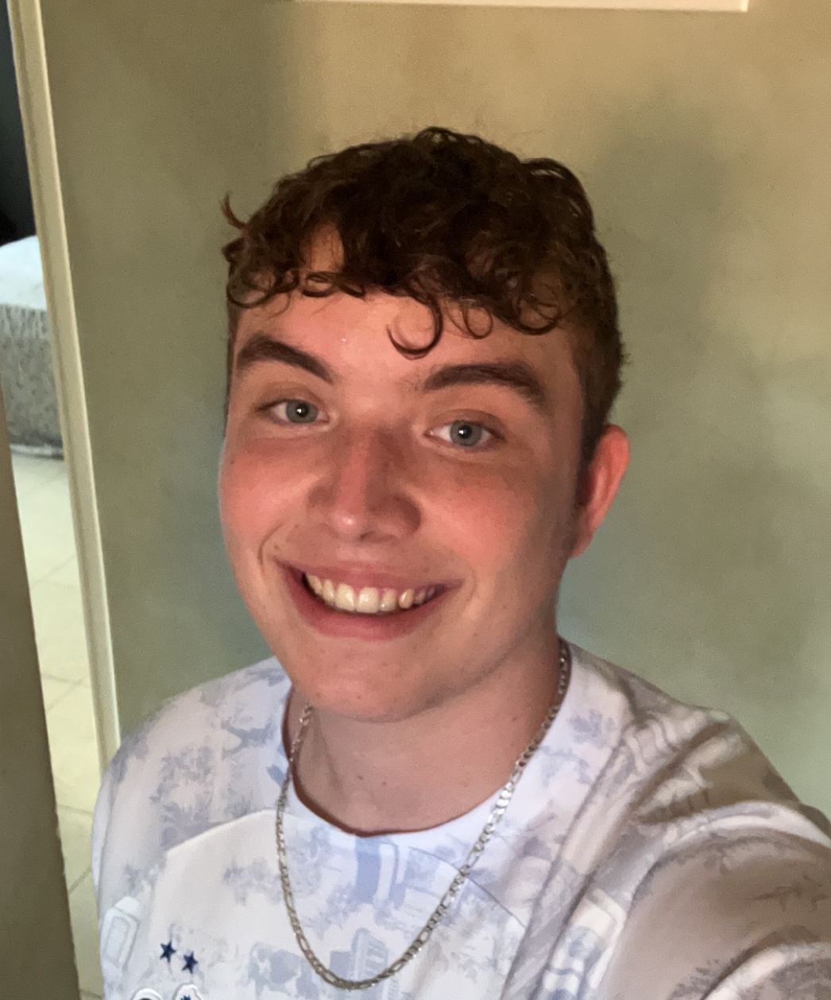
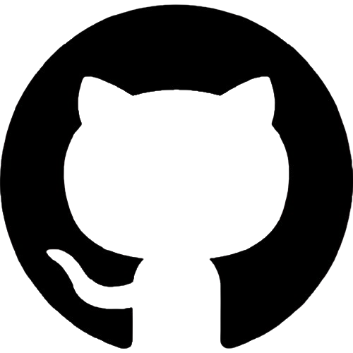
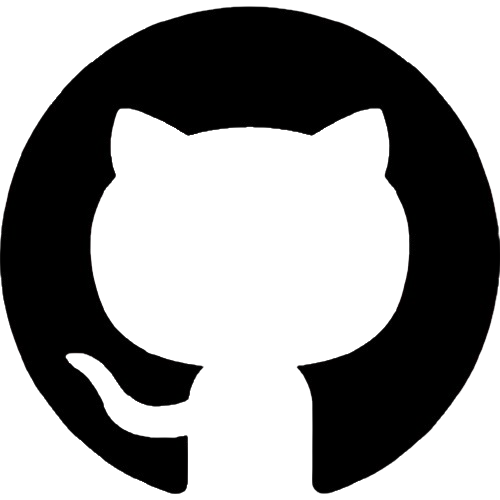
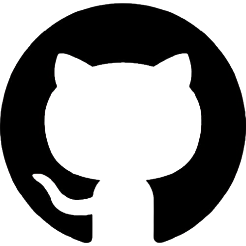
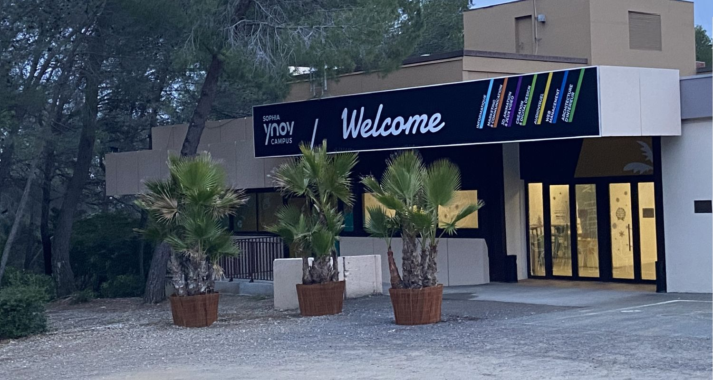
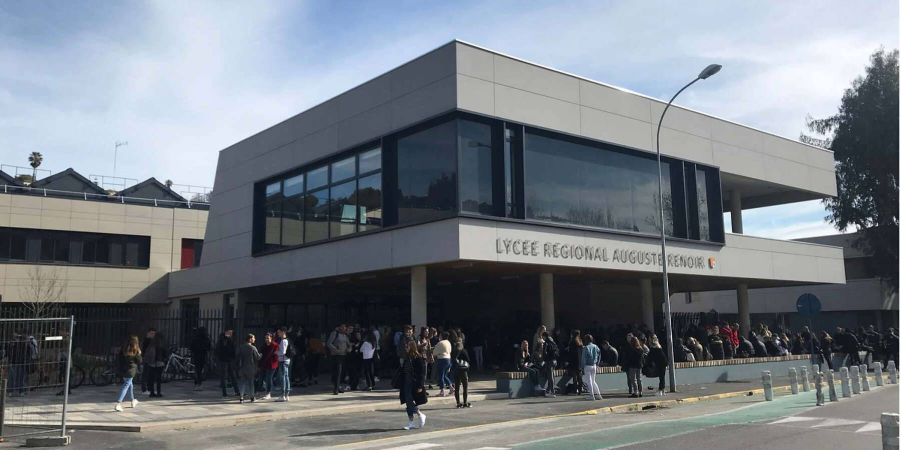
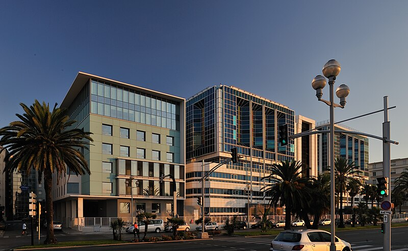

Bonjour c'est
Rolland Dylan
B3 Informatique
 

Bonjour c'est
B3 Informatique

Bonjour, je m'appelle Dylan Rolland et je suis étudiant en 3e année de Cybersécurité à Sophia Ynov Campus.
Mon parcours scolaire a débuté au collège André Malraux à Cagnes sur Mer, où j'ai développé un intérêt pour l'informatique en achetant mon premier ordinateur pour le brevet. Ensuite, j'ai poursuivi mes études au lycée Auguste Renoir de Cagnes sur Mer, où j'ai suivi les spécialités mathématiques, anglais et informatique ce qui m'a permis de me spécialiser dans le domaine de l'informatique.
Après avoir obtenu mon baccalauréat avec mention bien, j'ai intégré le programme de Cybersécurité à Sophia Ynov Campus. Durant ces deux premières années, j'ai pu participer à plusieurs projets qui m'ont permis de confirmer mon envie de m'orienter vers le domaine de la cybersécurité. J'ai acquis des compétences en sécurité des systèmes d'information, réseaux, et développement web.
Côté expérience professionnelle, j'ai effectué un stage au sein de la Fondation Lenval, où j'ai contribué à la mise en place de solutions de sécurité informatique. J'ai également pu travailler dans leur support informatique qui consiste à dépanner les employés sur les diffèrents sites de l'hôpital pédiatrique Lenval.
Je suis passionné par la cybersécurité et toujours à la recherche de nouvelles opportunités pour élargir mes connaissances et compétences dans ce domaine en constante évolution.